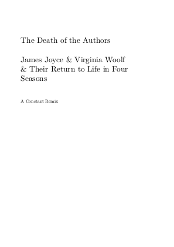

Books at LGM 2013

Curating as environmentalism
Curation: Elke van Campenhout & Adva Zakai
http://environmentalism.stdin.fr/

Heroic Real Estate Otter of the 21st Century
The Maggot
On November 2, 2012, five writers met in the austere, white confines of the Inspace gallery, in Edinburgh, Scotland and wrote for seven hours. They were later joined by two other contributors. Their work was coldly delegated and mediated by a software edit-machine known as The Maggot. This book is the the chewed-up corpse of the corpus that arose.
L’Ève future – Spécimens de fontes libres
Auguste de Villiers de L’Isle-Adam, Manuel Schmalstieg et al.
Les fontes libres et open-source affichent depuis quelques années une grande vitalité, notamment suite à leur entrée dans les navigateurs Web et l’apparition de services en ligne comme Google Webfonts. La grande variété de ces fontes fut le déclencheur de ce livre, élaboré lors d’un workshop à la HEAD (Haute Ecole d’Art et de Design de Genève) en février 2013. Réalisé par des étudiants du cursus communication visuelle, ce livre présente plus de deux cents spécimens de fontes libres, permettant d’examiner et de comparer leurs caractéristiques pour différents corps de texte. S’il est en premier lieu un répertoire typographique, ce catalogue se parcourt également comme un roman, puisqu’il présente l’intégralité de “L’Ève future”. Ce récit d’anticipation, publié en 1886 par Auguste de Villiers de L’Isle-Adam, propose une grande diversité de signes typographiques et offre un excellent terrain au jeu des caractères.

English version ‘Mots de la cage’
Dutch / French version ‘Mots de la cage’

